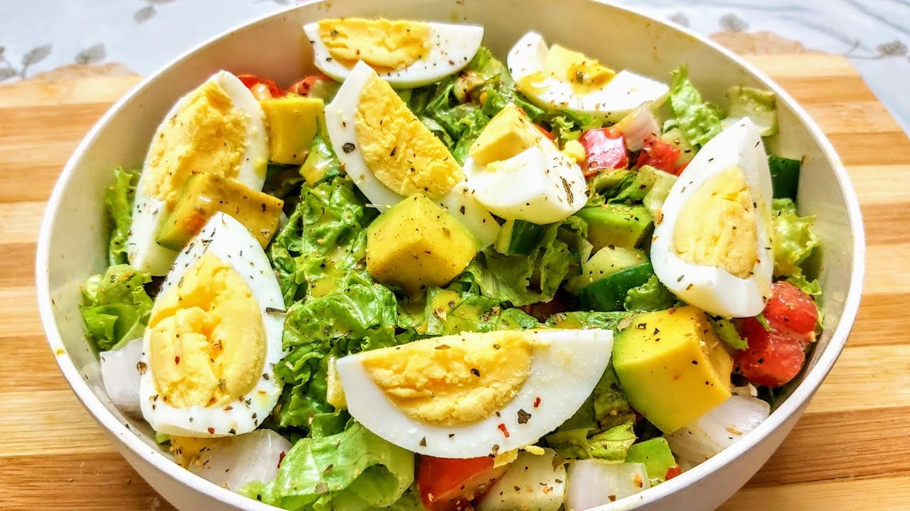

Avocado Egg Salad

Description
This avocado egg salad turned out to be a delicious way to use my extra avocados!
The rich, creamy texture of hard-boiled eggs and ripe avocado pairs
perfectly with the zesty kick from red onion, pickles, and mustard.
My honey loved it, too!
Ingredients
- 6 hard-boiled eggs, peeled
- 2 avocados, peeled, pitted, and cubed
- ½ cup minced red onion
- ⅓ cup mayonnaise
- 3 tablespoons chopped sweet pickles
- 1 tablespoon prepared yellow mustard
- salt and ground black pepper to taste
Steps :
- Mash hard-boiled eggs lightly in a bowl with a fork.
- Add avocado, red onion, mayonnaise, pickles, and mustard.
Gently mash together until just blended; season to taste with salt and black pepper.
- Store in the refrigerator until ready to serve.
Home